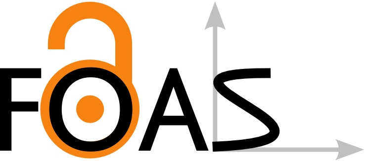

What is Shiny ?

help(package = shiny)
Description: Shiny makes it incredibly easy to build interactive web applications
with R. Automatic "reactive" binding between inputs and outputs and
extensive pre-built widgets make it possible to build beautiful,
responsive, and powerful applications with minimal effort.
- Originally created by Joe Cheng
- Delivered by RStudio company
